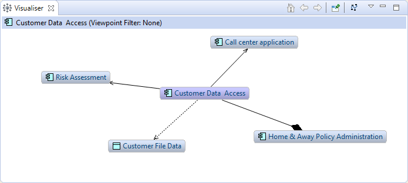
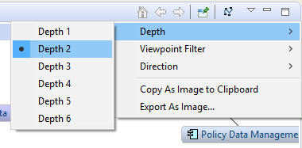

La fenêtre de visualisation affiche l'élément du modèle qui a été sélectionné ainsi que toutes ses relations avec d'autres éléments du modèle, et ce de façon graphique. C'est l'équivalent graphique du navigateur. Si vous sélectionnez un autre élément ou une relation dans l'arborescence du modèle, dans le navigateur ou dans la vue diagramme, il sera également sélectionné dans le visualisateur.
La fenêtre de visualisation
Pour utiliser le visualisateur, choisissez n'importe quel élément ou relation dans l'arborescence du modèle, dans le navigateur ou dans une vue. Le visualisateur sera mis à jour pour reflèter le changement. Le visusalisateur met en évidence l'élément et affiche toutes ses relations et tous les éléments qui y sont connectés. Double-cliquer sur l'un des éléments connectés vous permet de "Descendre dans" l'élément, de façon qu'il devienne le nouvel élément central sur lequel focaliser et que ce soit toutes ses relations et tous les éléments qui lui sont connectés qui soient affichés. Vous pouvez également "descendre dans" un élément depuis la barre d'outils de la fenêtre de visualisation; vous pouvez également cliquer sur "Retour" pour revenir à l'élément précédent. Choisissez "Accueil" dans la barre d'outils pour revenir au premier élément sélectionné.
Le visualisateur va afficher les éléments connectés à l'élément sélectionné en se limitant à un niveau de profondeur (connexions directes). Pour modifier le niveau de profondeur avec lequel les connexions sont calculées, choisissez le niveau de profondeur dans le menu déroulant de la fenêtre de visualisation:
Le menu du visualisateur relatif à la profondeur
Vous pouvez filtrer les éléments affichés dans le visualisateur grâce au menu "Filtre de point de vue". Ceci limitera l'affichage aux seuls éléments autorisés pour le point de vue donné. Pour voir tous les éléments, choisissez le point de vue "Aucun". Pour plus d'informations, voir la section Points de vue.
Cet élément de menu vous permet de choisir de n'afficher que les relations entrantes ou sortantes ainsi que les éléments connectés. Il est possible de choisir entre "les deux", "entrantes" et "sortantes". "entrantes" affiche toutes les relations entrantes, "sortantes" toutes les relations sortantes et "les deux", à la fois les relations entrantes et sortantes. C'est la même fonctionnalité que celle du Navigateur.
La première fois qu'un élément qu'un élément mis en valeur est affiché dans la fenêtre du visualisateur, une animation est utilisée. Cette animation peut être désactivée dans les Préférences. Si vous souhaitez ré-arranger l'affichage, vous pouvez appuyer sur le bouton "Agencement" de la barre d'outils de la fenêtre de visualisation.
Vous pouvez enregistrer le contenu du visualisateur sous forme d'image dans un fichier, ou bien copier l'image dans le presse-papier de votre système à l'aide du menu contextuel (Ceci n'est pas implémenté dans la version Linux 64 bits d'Archi à cause d'un bug d'Eclipse).